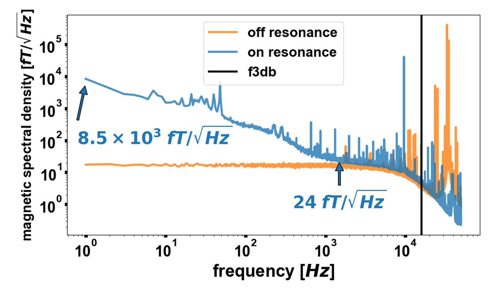
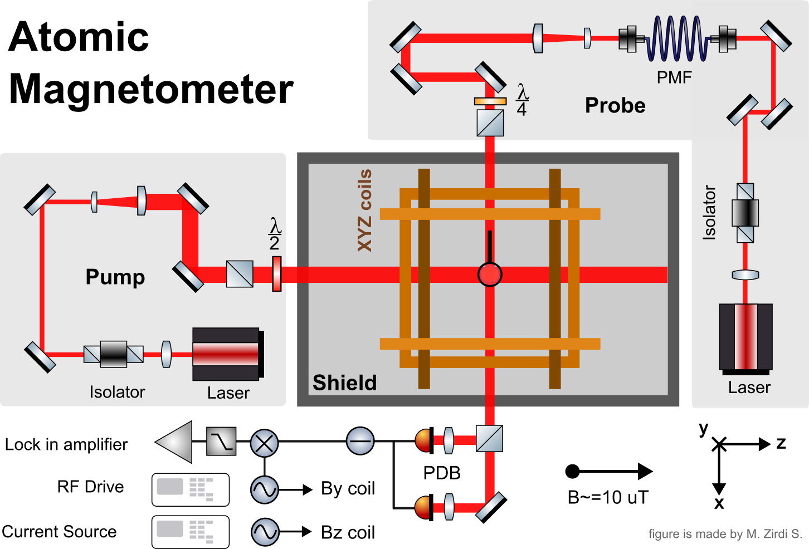
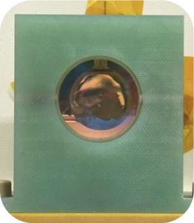
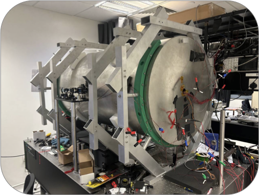
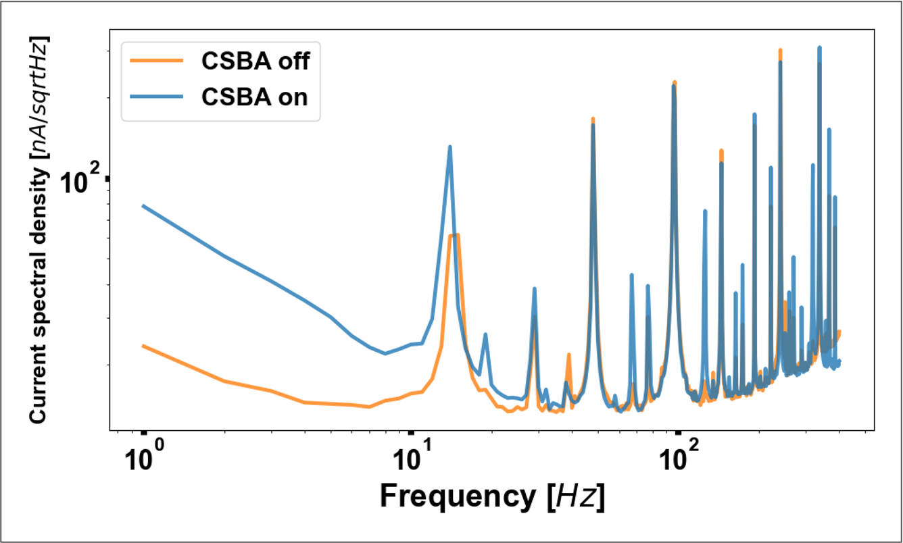

Atomic magnetometry · A*STAR Q.InC
QEP 2.0 Atomic Magnetometer
Building a scalar atomic magnetometer capable of femtotesla-sensitive measurement.

Project Abstract
At A*STAR Q.InC, I built and tested a prototypical scalar atomic magnetometer. We report a sensitivity as low as 10 fT/√Hz on an applied field of about 10 μT, corresponding to an effective signal-to-noise ratio of about one part per billion. Moreover, we expect a theorhetical maximal sensitivity of 1 fT/√Hz. This technology has applications in geomagnetic surveys, fundamental physics, nuclear magnetic resonance (NMR), magnetic resonance imaging (MRI), nuclear quadrupole resonance (NQR), and many more (some of which explored in other projects in this notebook).
At its core, the sensor uses potassium vapour in a thermal cell; The fundamental sensing scheme utilises the precession of electronic spin under the presence of a magnetic field. Then, the magnetic sensitivity is assessed from the spectral density of a lock-in-amplified probe beam whos linear polarisation rotates resonantly with the atomic precession.
Background And Motivation
In the classical picture, the atomic ensemble’s spin-polarisation vector precesses about the applied magnetic field. With a signed gyromagnetic ratio γ, its evolution is described by:
For a field along z, the transverse spin components rotate at the Larmor frequency, |ω L| = |γ|B. The probe beam reads out the evolving spin polarisation as an optical rotation signal.
Results And Next Steps
The updated poster reports sensitivity down to 10 fT/√Hz under an applied field of about 10 μT. The magnetic spectral-density plot compares on- and off-resonance measurements, marking 8.5 × 10³ fT/√Hz at low frequency, 24 fT/√Hz near 1 kHz, and the 3 dB bandwidth.
Ultimately, we believe our achievable sensitivity is closer to the theorhetically predicted optimal, however calibration errors and noisy electronics limited our ability to validated that claim. We note that at low frequencies, noise from the current source remains a key limitation: 75 nA/√Hz at 1 Hz, compared with a target below 0.4 nA/√Hz. The proposed next steps include a quieter current source, gradiometric measurements to reduce common-mode 1/f noise, digital signal processing to address aliasing, and larger probe beams and optimized detuning.

Low-frequency current-source noise remains the main limitation. Next steps include quieter drive electronics, gradiometric readout, and improved signal processing.
Methodology
The diagram shows a potassium-vapour cell at the centre of a magnetic shield. Two laser beams interact with the atoms: the pump beam prepares their spin polarisation, and the probe beam measures how that polarisation changes in a magnetic field.

Optical paths and sensor
- Pump laser (left): its beam is routed by mirrors through an isolator and wave plates, then sent horizontally through the cell. The wave plates set the light polarisation needed to optically pump the potassium atoms. The isolator reduces back-reflections into the laser.
- Probe laser (right): a separate beam travels through an isolator and the polarisation-maintaining fibre (PMF), then through the cell along a perpendicular direction. The quarter-wave plate and other polarisation optics prepare and analyse the probe polarisation.
- Vapour cell: potassium atoms in the heated cell acquire a collective spin from the pump beam. The probe’s polarisation rotates slightly as it passes through the spin-polarised vapour; that rotation is the magnetic-field signal.
- Magnetic shield: the enclosure reduces ambient magnetic fields and interference, allowing the controlled field and the cell’s response to be measured more reliably.
Field control and readout
- XYZ coils: the coils around the cell apply and adjust fields along the three axes. The diagram marks a bias field of about 10 μT; the By coil also receives an RF drive to excite the atomic spin response, while the Bz coil is driven by a current source.
- Polarising beam splitter (PDB in the diagram): separates the probe’s orthogonal polarisation components onto two photodetectors.
- Photodetectors and lock-in amplifier: the detector signals are differenced to extract the small polarisation-rotation signal. The lock-in amplifier uses the RF reference to isolate the response at the drive frequency and reject unrelated noise.
- RF drive and current source: provide the controlled oscillating and static coil currents. Their stability and noise directly affect the measured sensitivity.
In practice, the pump and probe powers and polarisations are tuned, the magnetic shield is degaussed, and the coil currents and lock-in gain are set before measuring the probe signal over frequency.
Citations
A*STAR Q.InC sensing research: Q.InC sensing research ↗. Project poster: M. Zirdi Syukur, Md. Danial Afiq, and Junyi Lee.
Apparatus And Results
Photographs and noise measurements from the project poster.


